Resumen
La caficultura sostiene a cientos de miles de familias rurales en Colombia, pero sus prácticas convencionales en laderas andinas generan degradación del suelo, erosión, contaminación de fuentes hídricas, uso ineficiente del agua y pérdida de biodiversidad. Este proyecto desarrolla EcoFinca, un simulador interactivo, en forma de aplicación web, en el que el usuario administra una finca cafetera de cinco hectáreas y toma decisiones mes a mes sobre siembra, fertilización, riego, control de plagas, conservación, inversiones y comercialización.
El simulador integra un motor de simulación propio que modela de forma interconectada la fertilidad, la humedad y la erosión del suelo, la salud del cultivo, tres plagas y enfermedades del café, la contaminación y la calidad del agua, la biodiversidad, el clima y la economía de la finca. Las decisiones se evalúan con tres dimensiones, productividad (30 %), rentabilidad (30 %) y sostenibilidad (40 %), y una finca no puede obtener una calificación alta si su rentabilidad se obtuvo destruyendo el ecosistema.
Las pruebas incluyen 122 pruebas automatizadas y recorridos completos en el navegador. Un experimento controlado con la misma semilla aleatoria muestra que, en la finca equilibrada, la estrategia convencional produce más café (13.254 kg frente a 10.847 kg en tres años) pero termina con erosión de 71/100 y calificación «Aceptable», mientras que la estrategia sostenible conserva el suelo (erosión 0/100), usa 79 % menos agua, obtiene mayor ganancia y alcanza la calificación «Excelente».
Palabras clave: simulación, agricultura sostenible, caficultura, erosión, contaminación hídrica, manejo integrado de plagas, agroforestería, desarrollo regional.
1. Introducción
1.1 Contexto y justificación
El desarrollo regional en Colombia depende en buena medida de la producción agropecuaria de pequeña escala. En las zonas de montaña, el café es el cultivo emblemático y la principal fuente de ingresos de muchas familias. Sin embargo, las decisiones de manejo que maximizan la producción en el corto plazo (suelo desnudo, fertilización química excesiva, beneficio del café con mucha agua y vertimiento de residuos, eliminación de árboles y rondas de quebradas) deterioran los recursos de los que depende la misma producción.
Estas relaciones son difíciles de enseñar con explicaciones estáticas porque sus efectos se acumulan durante meses y años, y porque los componentes del ecosistema interactúan entre sí. Un simulador permite experimentar con decisiones, observar sus consecuencias en un tiempo comprimido y comparar estrategias bajo las mismas condiciones, algo que en una finca real tomaría años y tendría costos altos.
1.2 Objetivo general
Desarrollar un simulador interactivo que permita a los usuarios entender y experimentar con el manejo adecuado de la producción cafetera en una finca rural colombiana, para abordar la degradación del suelo y la contaminación de las fuentes hídricas asociadas a la producción convencional.
1.3 Objetivos específicos
- Investigar el problema de producción en el sector cafetero y sus implicaciones ambientales: causas, impactos y posibles soluciones de manejo del ecosistema.
- Diseñar el simulador: definir los elementos del ecosistema que se simulan, los requerimientos funcionales y no funcionales, y la interfaz de usuario.
- Implementar el simulador como aplicación web, con un motor de reglas y algoritmos que modele la interacción entre suelo, agua, cultivo, plagas, biodiversidad, clima y economía.
- Probar el simulador para identificar errores y áreas de mejora, y definir un procedimiento para recopilar la retroalimentación de usuarios.
1.4 Alcance
EcoFinca es una herramienta educativa. Sus ecuaciones representan relaciones cualitativas reconocidas en la literatura agronómica y ambiental, pero sus coeficientes son parámetros de calibración elegidos para producir dinámicas plausibles y didácticas. No reemplaza la asistencia técnica ni debe usarse para planificar una finca real. Los precios del juego son valores de referencia ficticios.
1.5 Correspondencia con la actividad y la rúbrica
| Requisito de la actividad | Dónde se atiende | Evidencia |
|---|---|---|
| 1. Investigación del problema (causas, impactos, soluciones) | Capítulo 2 y enciclopedia del simulador | Texto del informe y sección «Enciclopedia» |
| 2. Diseño: elementos del ecosistema | Sección 3.1 y 3.2 | Tablas de elementos y relaciones |
| 2. Diseño: requerimientos | Secciones 3.3 y 3.4 | 20 requerimientos funcionales y 10 no funcionales |
| 2. Diseño: interfaz | Sección 3.5 | Capturas de las pantallas del simulador |
| 3. Desarrollo con herramientas adecuadas | Secciones 4.1 y 4.2 | Aplicación web React + TypeScript, repositorio de código |
| 3. Reglas y algoritmos | Secciones 4.3 a 4.7 | Ecuaciones del motor EcoFinca Engine |
| 4. Pruebas | Secciones 5.1 a 5.4 | 122 pruebas automatizadas y pruebas en navegador |
| 4. Retroalimentación de usuarios | Sección 5.5 y Anexo A | Protocolo, cuestionario y tabla de resultados |
| Presentación del simulador y conclusiones | Capítulos 6, 7 y 9 | Resultados, conclusiones y acceso al simulador |
2. Investigación: producción cafetera y sus implicaciones ambientales
2.1 La caficultura en Colombia
El café se cultiva en las laderas de las tres cordilleras andinas y en la Sierra Nevada de Santa Marta, generalmente entre 1.200 y 2.000 metros de altitud. Según la Federación Nacional de Cafeteros (FNC), la actividad involucra a más de medio millón de familias, y la gran mayoría de las fincas son pequeñas, de menos de cinco hectáreas. Por eso EcoFinca simula una finca de cinco hectáreas: es la escala típica del productor que toma decisiones con recursos limitados.
En la zona cafetera central el régimen de lluvias es bimodal: dos temporadas lluviosas (aproximadamente marzo a mayo y septiembre a noviembre) y dos temporadas más secas. Los fenómenos de variabilidad climática El Niño y La Niña alteran este patrón: El Niño se asocia con déficit de lluvias y sequía, y La Niña con lluvias excesivas. La epidemia de roya de 2008 a 2011, asociada a un periodo de lluvias abundantes y a variedades susceptibles, llevó a una amplia renovación de cafetales con variedades resistentes como Castillo.
2.2 Problema ambiental central
El problema que aborda el simulador es la degradación de los recursos naturales de la finca cafetera por prácticas de producción orientadas solo al rendimiento de corto plazo. Se manifiesta en seis componentes relacionados:
- Degradación del suelo: pérdida de fertilidad y de materia orgánica, acidificación por uso continuo de fertilizantes de síntesis.
- Erosión: arrastre de la capa fértil por la lluvia en laderas desprotegidas.
- Contaminación de fuentes hídricas: escorrentía de fertilizantes y plaguicidas, sedimentos y aguas residuales del beneficio del café (aguas mieles).
- Uso ineficiente del agua: riego poco eficiente y beneficio húmedo tradicional con alto consumo.
- Uso inadecuado de fertilizantes: dosis superiores a lo que el cultivo aprovecha.
- Pérdida de biodiversidad: monocultivo a plena exposición solar, tala de bosques y rondas, plaguicidas que eliminan la fauna benéfica.
2.3 Causas
| Causa | Descripción |
|---|---|
| Pendientes pronunciadas | La mayor parte del café se cultiva en laderas, donde el agua de escorrentía gana velocidad y arrastra suelo. |
| Suelo desnudo | El control total de arvenses (malezas) y la preparación del terreno sin cobertura dejan el suelo expuesto al impacto de la lluvia. |
| Monocultivo a plena exposición | La eliminación del sombrío aumenta el rendimiento potencial, pero expone el suelo, eleva la temperatura y reduce el hábitat de la fauna. |
| Fertilización sin diagnóstico | Aplicar fertilizante químico por calendario o en dosis altas, sin análisis de suelo, genera excedentes que se lavan hacia el agua. |
| Beneficio húmedo tradicional | El despulpado y lavado del café con mucha agua producen aguas mieles con alta carga orgánica que, vertidas sin tratamiento, contaminan las quebradas. |
| Control químico de plagas | El uso frecuente de plaguicidas elimina controladores naturales, contamina y puede generar resistencia. |
| Deforestación de rondas y nacimientos | La pérdida de vegetación junto a las quebradas reduce la filtración de contaminantes y la regulación del caudal. |
| Variabilidad climática | Sequías (El Niño) y lluvias intensas (La Niña) amplifican la erosión, el estrés hídrico y las enfermedades. |
| Presión económica | Márgenes estrechos y falta de capital llevan a priorizar el ingreso inmediato sobre la conservación. |
2.4 Impactos
| Problema | Impacto ambiental | Impacto productivo | Impacto económico y social |
|---|---|---|---|
| Erosión | Pérdida de suelo, sedimentos en quebradas | Menor fertilidad y retención de agua | Más fertilizante para producir lo mismo |
| Exceso de fertilizantes | Nutrientes en el agua, acidificación | Sin aumento de cosecha por encima del óptimo | Dinero perdido en insumos no aprovechados |
| Aguas mieles | Consumo del oxígeno del agua, mortandad de fauna acuática | — | Conflictos con vecinos y sanciones ambientales |
| Uso ineficiente del agua | Menor caudal disponible | Estrés hídrico en meses secos | Costos de agua y riesgo de perder cosechas |
| Pérdida de biodiversidad | Menos aves, insectos y microorganismos | Más plagas por falta de controladores | Mayor gasto en plaguicidas |
| Plagas y enfermedades | Residuos de plaguicidas | Pérdida de cantidad y calidad del grano | Menores ingresos |
2.5 Soluciones de manejo del ecosistema
La literatura técnica, en particular las publicaciones divulgativas de Cenicafé y la FNC, propone prácticas que reducen los impactos sin renunciar a la producción. Todas se incorporaron al simulador como decisiones con costo, condiciones y efectos.
| Práctica | Problema que atiende | Cómo funciona | En EcoFinca |
|---|---|---|---|
| Cobertura vegetal (manejo integrado de arvenses) | Erosión, humedad, fertilidad | Las plantas de porte bajo protegen el suelo del impacto de la lluvia y aumentan la infiltración | Acción «Cobertura vegetal», se establece en 3 meses |
| Barreras vivas en contorno | Erosión, sedimentos | Franjas de plantas que frenan la escorrentía y retienen suelo | Acción «Barreras vivas», 6 meses |
| Sombrío (agroforestería) | Calor, sequía, biodiversidad | Árboles que regulan temperatura, aportan hojarasca y ofrecen hábitat | Acción «Sombrío», 12 meses |
| Fertilización orgánica y balanceada | Fertilidad, contaminación | Liberación gradual de nutrientes y mejora de la vida del suelo | Fertilizar: orgánico o químico, tres dosis |
| Manejo integrado de plagas (MIP) | Plagas, biodiversidad, contaminación | Monitoreo, control biológico (por ejemplo Beauveria bassiana contra la broca), recolección de frutos caídos | Control de plagas: MIP o químico |
| Beneficio ecológico y tratamiento de residuos | Contaminación y consumo de agua | Despulpado con poca agua, tratamiento de aguas mieles y compostaje de la pulpa (tecnología Becolsub de Cenicafé) | Inversión «Beneficio ecológico» |
| Protección de rondas y nacimientos | Calidad y cantidad de agua, biodiversidad | La vegetación de ribera filtra contaminantes y estabiliza el caudal | Acción «Conservar la ronda de la quebrada» |
| Reforestación y restauración | Biodiversidad, erosión, caudal | Recuperar cobertura boscosa en áreas degradadas o lotes poco aptos | Reforestar lote y restaurar área degradada |
| Riego eficiente y cosecha de agua | Uso del agua | El goteo aplica el agua en la raíz; los reservorios almacenan lluvia | Inversiones «Riego por goteo» y «Reservorio» |
| Renovación con variedades resistentes | Roya | Variedades como Castillo o Cenicafé 1 reducen la necesidad de fungicidas | Acción «Renovar cafetal» y siembra por variedad |
2.6 Marco conceptual
| Concepto | Definición usada en el proyecto |
|---|---|
| Agricultura sostenible | Producción que equilibra productividad, viabilidad económica y conservación de los recursos naturales de los que depende. |
| Servicio ecosistémico | Beneficio que la naturaleza presta a la producción: suelo fértil, agua limpia, polinización, control natural de plagas. |
| Fertilidad del suelo | Capacidad del suelo para suministrar nutrientes; depende de su química, estructura y vida biológica. |
| Erosión hídrica | Desprendimiento y transporte de suelo por la lluvia y la escorrentía; aumenta con la pendiente y la falta de cobertura. |
| Escorrentía | Fracción de la lluvia que no se infiltra y corre sobre la superficie, arrastrando suelo y contaminantes. |
| Evapotranspiración | Agua que sale del suelo por evaporación y por transpiración de las plantas; disminuye cuando el suelo está seco. |
| Aguas mieles | Aguas residuales del despulpado y lavado del café, con alta carga orgánica. |
| Ronda hídrica | Franja de protección junto a quebradas y nacimientos que la normativa ambiental busca conservar. |
| Manejo integrado de plagas | Estrategia que combina monitoreo, control biológico y cultural, y usa químicos solo como último recurso. |
| Agroforestería | Sistema que integra árboles con cultivos en el mismo terreno. |
| Simulación dinámica | Modelo que actualiza el estado de un sistema paso a paso a partir de reglas que relacionan sus variables. |
| Semilla aleatoria | Número que inicializa el generador pseudoaleatorio; la misma semilla reproduce el mismo clima y los mismos eventos. |
3. Diseño del simulador
3.1 Elementos clave del ecosistema
El ecosistema de la finca se modela con elementos bióticos (plantas, insectos y hongos), elementos abióticos (suelo, agua y clima) y el componente humano (decisiones y economía).
| Categoría | Elemento | Papel en el ecosistema | Cómo se representa |
|---|---|---|---|
| Plantas | Café (Coffea arabica): variedades Castillo, Cenicafé 1, Caturra y Tabi | Cultivo principal; extrae nutrientes y agua | Etapa fenológica, edad, salud, producción estimada y acumulada |
| Plantas | Árboles de sombrío (guamo, nogal cafetero, plátano) | Regulan temperatura, aportan hojarasca y hábitat | Nivel de sombrío 0–1 por lote |
| Plantas | Coberturas y arvenses nobles | Protegen el suelo, fijan nitrógeno | Nivel de cobertura 0–1 por lote |
| Plantas | Barreras vivas (limoncillo, vetiver) | Frenan la escorrentía en contorno | Nivel de barreras 0–1 por lote |
| Plantas | Bosque nativo y vegetación de ribera | Hábitat, regulación del agua | Hectáreas de bosque, ronda, área degradada y en restauración |
| Insectos | Broca del café (Hypothenemus hampei) | Plaga que perfora el grano | Incidencia 0–100 por lote |
| Hongos | Roya (Hemileia vastatrix) | Enfermedad que defolia la planta | Incidencia 0–100 por lote |
| Hongos | Mancha de hierro (Cercospora coffeicola) | Enfermedad asociada a mala nutrición | Incidencia 0–100 por lote |
| Fauna benéfica | Aves, insectos depredadores, hongos entomopatógenos | Controladores naturales de plagas | Biodiversidad 0–100: reduce el crecimiento de plagas |
| Suelo | Fertilidad, humedad, erosión, residuos químicos | Base de la producción | Cuatro variables 0–100 por lote |
| Agua | Quebrada, caudal, reservorio, calidad | Abastecimiento y receptor de contaminantes | Caudal 0–100, metros cúbicos almacenados, calidad 0–100 |
| Clima | Temperatura, precipitación, humedad, riesgo de sequía, intensidad de lluvia | Motor de la dinámica del agua, plagas y erosión | Clima mensual con seis condiciones |
| Componente humano | Decisiones, mano de obra, insumos, dinero, mercado | Presión y gestión del ecosistema | Acciones, inventario, jornales y precios |
3.2 Relaciones entre componentes
El valor del simulador está en que sus variables se afectan entre sí. Las relaciones principales implementadas son:
- La lluvia aumenta la humedad del suelo, pero también genera escorrentía y erosión; la cobertura, las barreras y el sombrío reducen ambas.
- Mayor erosión disminuye la fertilidad y produce sedimentos que deterioran la calidad del agua.
- El fertilizante químico sube la fertilidad de inmediato; el exceso se convierte en carga química que la escorrentía lleva a la quebrada y aumenta la contaminación.
- La contaminación deteriora la calidad del agua; la ronda protegida y el bosque aumentan la autodepuración.
- La sequía y el calor reducen la humedad y la salud del cultivo, y favorecen la broca; la humedad y la lluvia favorecen la roya.
- La biodiversidad reduce el crecimiento de las plagas y mejora la fertilidad por la actividad biológica del suelo.
- Los plaguicidas químicos reducen las plagas, pero también la biodiversidad, y aumentan la contaminación.
- La producción depende de la fertilidad, la humedad, la salud del cultivo y el clima.
- El bosque y la ronda protegida aumentan el caudal de la quebrada, que alimenta el reservorio de la finca.
- La economía conecta todo: cada acción cuesta dinero, jornales o insumos; sin liquidez la finca puede quebrar.
3.3 Requerimientos funcionales
| Código | Requerimiento |
|---|---|
| RF-01 | Crear una partida configurando nombre de la finca y del administrador, escenario, dificultad, presupuesto, duración, número de parcelas y semilla aleatoria. |
| RF-02 | Ofrecer tres escenarios con condiciones iniciales y objetivos propios: finca equilibrada, suelo degradado y crisis hídrica. |
| RF-03 | Mostrar un mapa interactivo de la finca con parcelas seleccionables y seis capas: general, fertilidad, humedad, erosión, cultivos y biodiversidad. |
| RF-04 | Mostrar la información de la parcela seleccionada: cultivo, etapa, salud, suelo, plagas, prácticas y producción. |
| RF-05 | Ejecutar acciones de parcela: preparar, sembrar, fertilizar, regar, controlar plagas, cobertura, barreras, sombrío, mantenimiento, cosechar y reforestar. |
| RF-06 | Calcular y mostrar el costo de cada acción en dinero, jornales e insumos, e impedir acciones sin recursos suficientes. |
| RF-07 | Avanzar la simulación por meses y mostrar un resumen de los cambios de cada turno. |
| RF-08 | Simular el clima mensual y su efecto sobre el suelo, el cultivo, las plagas y la productividad. |
| RF-09 | Simular plagas y enfermedades con aparición, crecimiento, propagación entre lotes vecinos y tratamientos químicos o integrados. |
| RF-10 | Administrar inventario de agua, insumos, colinos, café almacenado y mano de obra, con alertas de nivel crítico. |
| RF-11 | Permitir comprar insumos, vender la cosecha, contratar jornales e invertir en infraestructura. |
| RF-12 | Registrar todos los movimientos económicos y mostrar el balance por categoría. |
| RF-13 | Ofrecer acciones de conservación a escala de finca: proteger la ronda hídrica y restaurar áreas degradadas. |
| RF-14 | Generar eventos (clima, plagas, mercado, ambiente, social) con condiciones, probabilidad, impacto, duración y respuestas del jugador. |
| RF-15 | Calcular productividad, rentabilidad, sostenibilidad y puntuación global; evaluar cada ciclo de 12 meses y la partida completa. |
| RF-16 | Determinar victoria, fin de partida o derrota (quiebra o colapso ecológico) y generar recomendaciones. |
| RF-17 | Mostrar informes con gráficas y tablas de la evolución de los indicadores, la producción y la economía. |
| RF-18 | Comparar una estrategia convencional y una sostenible con las mismas condiciones iniciales y la misma semilla. |
| RF-19 | Incluir una enciclopedia educativa y un tutorial de uso. |
| RF-20 | Guardar automáticamente, continuar y eliminar partidas, conservando el progreso al cerrar el navegador. |
3.4 Requerimientos no funcionales
| Código | Atributo | Requerimiento |
|---|---|---|
| RNF-01 | Portabilidad | Funcionar completamente en el navegador, sin servidor ni servicios externos de pago. |
| RNF-02 | Usabilidad | Interfaz en español, con tooltips explicativos, confirmación de acciones importantes y estados vacíos y de carga. |
| RNF-03 | Diseño adaptable | Funcionar en escritorio, tableta y teléfono sin desplazamiento horizontal. |
| RNF-04 | Accesibilidad | Navegación por teclado en el mapa, textos alternativos, paleta de gráficas validada para daltonismo y vista de tabla en cada gráfica. |
| RNF-05 | Mantenibilidad | Motor de simulación separado de la interfaz; coeficientes centralizados en un archivo de configuración. |
| RNF-06 | Reproducibilidad | Con la misma semilla y configuración, el clima y los eventos se repiten exactamente. |
| RNF-07 | Confiabilidad de datos | Validar las entradas y cada partida guardada; nunca permitir valores fuera de rango ni saldos negativos por acciones. |
| RNF-08 | Persistencia | Guardar en IndexedDB con versión de esquema para permitir migraciones futuras. |
| RNF-09 | Calidad | TypeScript en modo estricto, sin errores de compilación, con pruebas automatizadas. |
| RNF-10 | Rendimiento | Procesar un mes de simulación de forma instantánea y cargar las secciones con gráficas bajo demanda. |
3.5 Diseño de la interfaz
La interfaz se diseñó como un videojuego de gestión agrícola y no como un tablero empresarial. La identidad visual usa una paleta inspirada en el paisaje cafetero (verde bosque, verde natural, verde claro, beige tierra, café y azul agua), tipografías legibles y bordes suaves. El mapa es el elemento central y se dibuja a partir del estado real de la finca: el color de cada lote, sus plantas, las coberturas, las barreras, el bosque, la quebrada y el nivel del reservorio cambian con cada decisión.
- Pantalla de inicio: presentación del juego, nueva partida, continuar, cómo jugar, configuración y partidas guardadas.
- Configuración de partida: formulario validado con tarjetas de escenario y dificultad.
- Pantalla de juego: barra superior con el estado de la finca, navegación por nueve secciones, mapa central y panel lateral de la parcela.
- Secciones: Finca, Cultivos, Recursos, Ecosistema, Clima, Mercado, Eventos, Informes y Enciclopedia.
- Ventanas de diálogo: resumen del mes, decisiones ante eventos, detalle y confirmación de acciones, y menú de pausa.
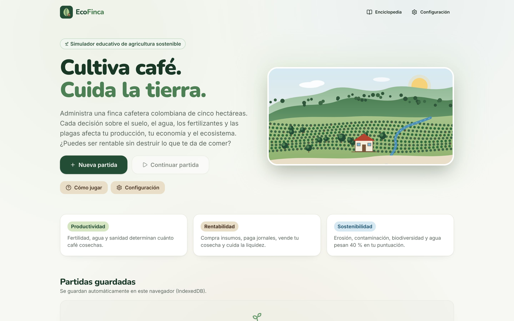
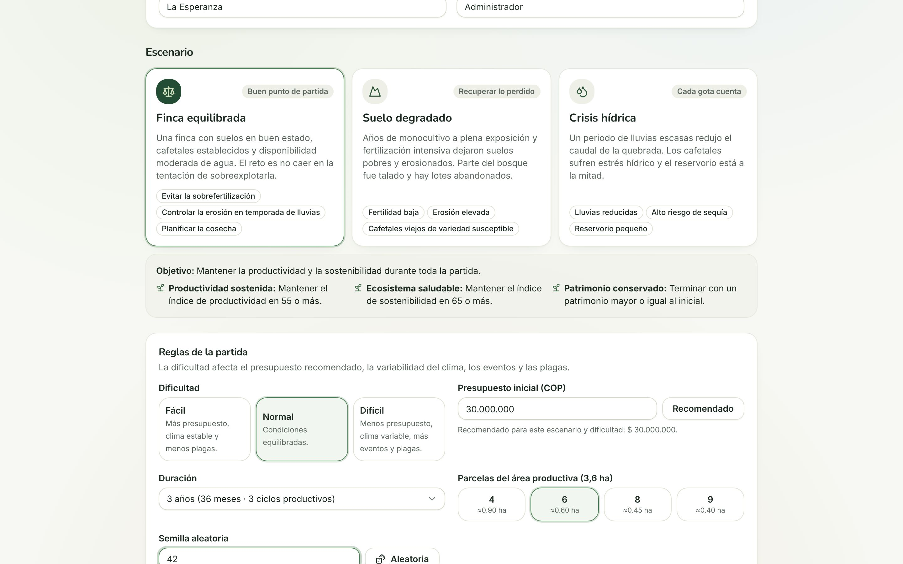
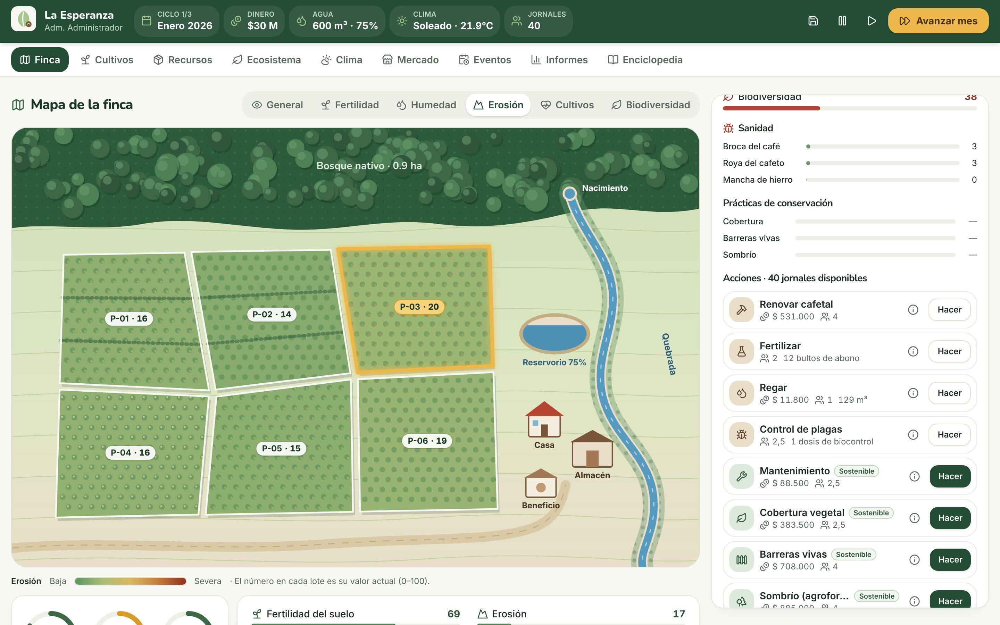
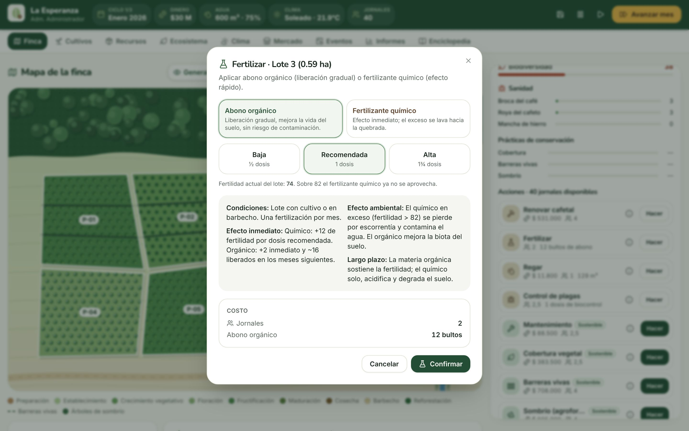
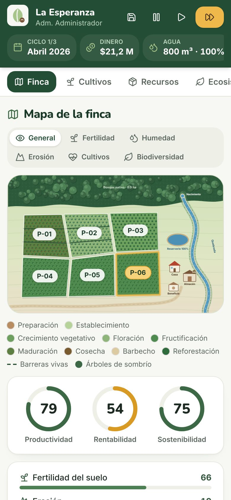
4. Desarrollo del simulador
4.1 Herramientas
| Herramienta | Versión | Uso y justificación |
|---|---|---|
| React | 19.3 | Construcción de la interfaz por componentes reutilizables. |
| TypeScript (modo estricto) | 7.0 | Tipado de todo el dominio para evitar errores en las reglas de simulación. |
| Vite | 8.3 | Servidor de desarrollo y compilación de producción. |
| Tailwind CSS | 4.3 | Sistema de diseño con los colores de la identidad EcoFinca. |
| shadcn/ui sobre Radix UI | — | Componentes accesibles: diálogos, pestañas, menús, deslizadores, tooltips. |
| TanStack Router | 1.170 | Navegación entre las secciones del juego conservando el estado. |
| Zustand | 5.1 | Estado global de la partida. |
| Zod | 4.6 | Validación de formularios, acciones y partidas guardadas. |
| Recharts | 3.11 | Gráficas de los informes, el clima y el mercado. |
| Dexie + IndexedDB | 4.4 | Guardado local de partidas en el navegador. |
| Vitest + React Testing Library | 5.1 / 16.3 | Pruebas unitarias, de integración y de componentes. |
| Lucide React | — | Iconografía coherente. |
4.2 Arquitectura
El código se organiza en cuatro capas. La regla principal es que las fórmulas solo existen en el motor; la interfaz lee el estado y envía acciones.
| Capa | Carpeta | Responsabilidad |
|---|---|---|
| Dominio | src/engine | Motor EcoFinca Engine en TypeScript puro: tipos, fórmulas, reglas, eventos, escenarios, clima, turnos y estrategias. No depende de React. |
| Aplicación | src/store, src/hooks | Estado global con Zustand; conecta el motor con la interfaz y la persistencia. |
| Presentación | src/modules, src/components, src/app | Pantallas, mapa SVG, componentes de interfaz, gráficas y rutas. |
| Infraestructura | src/persistence | Base de datos IndexedDB con Dexie, esquema de validación y migraciones. |
Las funciones del motor son puras: reciben el estado de la partida y devuelven un estado nuevo sin modificar el anterior. Esto facilita las pruebas, la comparación de estrategias y el guardado. El proyecto tiene cerca de 13.800 líneas de código de aplicación y 1.500 líneas de pruebas.
4.3 Reglas y algoritmos
Ciclo de simulación mensual
Cada vez que el usuario pulsa «Avanzar mes», el motor ejecuta los pasos en un orden fijo y documentado:
- Aplicar la respuesta por defecto a los eventos sin decisión.
- Combinar los efectos de los eventos activos (por ejemplo, una sequía reduce la lluvia).
- Actualizar el caudal de la quebrada y el agua del reservorio.
- Actualizar el suelo de cada parcela: humedad, erosión, fertilidad y residuos químicos.
- Actualizar los cultivos: salud, etapa fenológica y producción estimada.
- Actualizar plagas y enfermedades: crecimiento, propagación y brotes.
- Calcular los impactos ambientales: contaminación, calidad del agua y biodiversidad.
- Actualizar la economía: costos fijos, mantenimiento, merma del café almacenado y precios.
- Registrar el mes en el historial y evaluar el ciclo cada 12 meses.
- Avanzar el calendario, generar nuevos eventos y el clima del mes siguiente.
- Reiniciar la mano de obra y verificar las condiciones de victoria y derrota.
Ecuaciones principales
Todas las variables ambientales usan una escala de 0 a 100 y se limitan a ese rango en cada paso. Los factores de producción están normalizados entre 0 y 1.
Fertilidad: F(t+1) = F(t) + Recuperación − Degradación Humedad: H(t+1) = H(t) + P − Esc + Riego − ET − Drenaje Erosión: E(t+1) = E(t) + Erosividad × Pendiente × (1 − Protección) − Estab. Producción: Prod = Área × Rend. base × fFert × fHídrico × fSalud × fClima Rentabilidad: Ganancia = Ingresos por cosecha − Costos totales Contaminación: C(t+1) = C(t) + Aportes contaminantes − Mitigación Puntuación: Global = 0,30·Productividad + 0,30·Rentabilidad + 0,40·Sostenibilidad
Donde P es la precipitación, Esc la escorrentía, ET la evapotranspiración, Estab. la estabilización del suelo y fFert, fHídrico, fSalud y fClima los factores normalizados de fertilidad, agua, salud y clima.
- Recuperación de fertilidad: liberación del abono orgánico, cobertura, sombrío, barbecho o reforestación y actividad biológica del suelo.
- Degradación de fertilidad: extracción del cultivo según su etapa, erosión, lavado de nutrientes, acidificación por carga química y residuos.
- Evapotranspiración: depende de la temperatura y la condición climática, se reduce con cobertura y sombrío, y disminuye cuando el suelo está seco (concepto del Boletín FAO 56).
- Erosividad: crece con la cantidad e intensidad de la lluvia; la protección combina cobertura (hasta −75 %), barreras (hasta −60 %), sombrío (hasta −30 %) y reforestación (hasta −85 %). La estructura se inspira en la ecuación universal de pérdida de suelo (USLE).
- Producción: los factores se promedian durante la floración, la fructificación y la maduración, cuando se define la cosecha. Se ajusta por edad de la planta, variedad, sombrío, broca y cosecha tardía.
- Plagas: la incidencia crece según la favorabilidad ambiental, se reduce por la protección de los tratamientos y por la biodiversidad, y se propaga desde los lotes vecinos.
- Contaminación: los aportes son la escorrentía de fertilizante, los plaguicidas, los sedimentos y las aguas residuales del beneficio; la mitigación crece con la ronda protegida y el bosque.
Etapas del cultivo
| Etapa | Duración por defecto (configurable) |
|---|---|
| Preparación del terreno | 1 mes |
| Establecimiento | 3 meses |
| Crecimiento vegetativo | 10 meses (planta joven) / 4 meses (después de cada cosecha) |
| Floración | 1 mes |
| Fructificación | 4 meses |
| Maduración | 2 meses |
| Cosecha | Ventana de 2 meses; si no se cosecha, el fruto se pierde y alimenta la broca |
Con estos valores la primera cosecha llega unos 21 meses después de preparar el terreno y pasan unos 7 meses entre la floración y la cosecha, valores coherentes con los rangos divulgados para el café arábica en Colombia.
Aleatoriedad reproducible
El clima, los eventos, los brotes de plagas y el mercado usan generadores pseudoaleatorios independientes que dependen de la semilla, el mes y el tipo de proceso. Así, dos estrategias distintas con la misma semilla enfrentan exactamente el mismo clima, lo que permite comparar decisiones de forma controlada.
4.4 Escenarios
| Escenario | Condiciones iniciales | Objetivos |
|---|---|---|
| Finca equilibrada | Suelos fértiles, cafetales Castillo establecidos, agua moderada, presupuesto suficiente | Productividad ≥ 55, sostenibilidad ≥ 65 y patrimonio final ≥ inicial |
| Suelo degradado | Fertilidad baja, erosión alta, cafetales viejos de Caturra (susceptible a roya), lotes abandonados, bosque talado, presupuesto limitado | Fertilidad ≥ 55, erosión ≤ 35 y rentabilidad ≥ 50 |
| Crisis hídrica | Lluvias 32 % menores, 1,1 °C más de temperatura, reservorio pequeño, quebrada con poco caudal, sequías más frecuentes | Salud del cultivo ≥ 60, calidad del agua ≥ 60 y reservorio vacío como máximo 2 meses |
4.5 Eventos
El sistema de eventos es extensible: cada evento se define con nombre, descripción, condición, probabilidad, impacto, duración y respuestas posibles. Se implementaron once eventos:
| Evento | Condición e impacto | Respuestas |
|---|---|---|
| Sequía prolongada | Meses secos; lluvia −60 %, +1,5 °C, menor caudal durante 3 meses | Mantillo, plan de ahorro de agua, no hacer nada |
| Lluvias intensas | Temporadas lluviosas; lluvia +70 % y más erosión | Limpiar drenajes, no hacer nada |
| Ola de calor | Meses secos; +2,5 °C | Sombrío transitorio, no hacer nada |
| Brote de broca | Lotes con frutos; foco en un lote y sus vecinos | Campaña MIP, fumigación química, no intervenir |
| Epidemia de roya | Humedad alta o variedades susceptibles | Fungicida, nutrición balanceada, no hacer nada |
| Disminución del caudal | Caudal bajo; menos agua para el reservorio | Acuerdo comunitario, carrotanque, no hacer nada |
| Recuperación de biodiversidad | Biodiversidad y agua en buen estado; menos plagas | Aviturismo, monitoreo participativo |
| Incremento de costos de insumos | Precios de insumos +30 % | Producir compost, comprar a precio de mercado |
| Oportunidad comercial | Sostenibilidad alta; prima de precio +18 % | Firmar contrato, rechazar |
| Inspección ambiental | Contaminación alta; multa | Plan de manejo ambiental, asumir la sanción |
| Capacitación técnica | Taller del servicio de extensión | Asistir, no asistir |
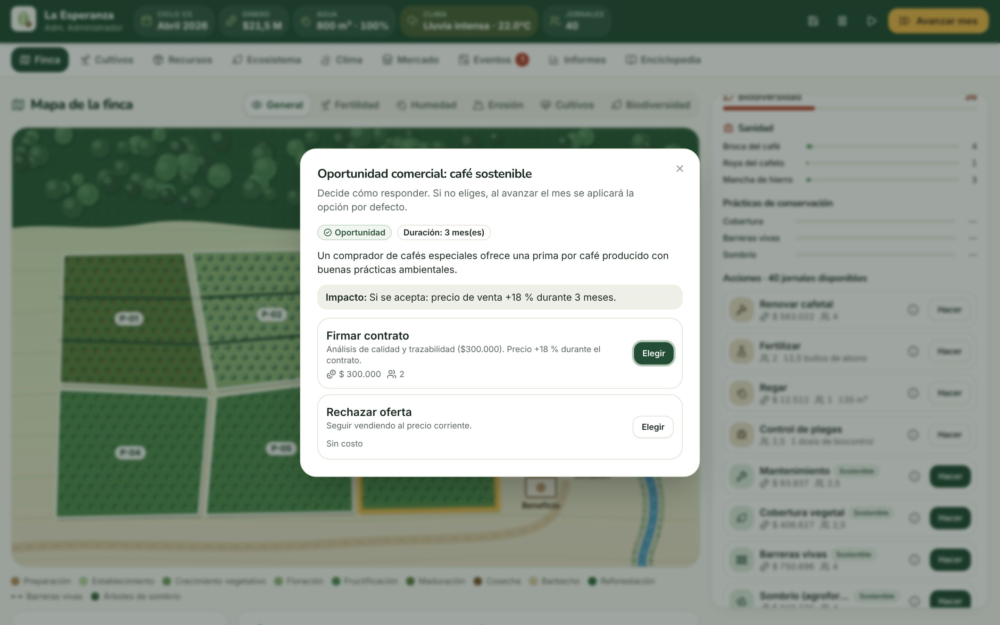
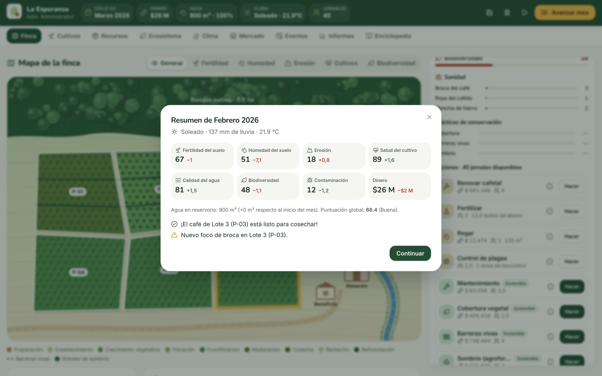
4.6 Puntuación, victoria y derrota
- Productividad: capacidad productiva de los lotes (fertilidad, humedad, salud y edad del cultivo) combinada con la producción real de los últimos 12 meses.
- Rentabilidad: variación anual del patrimonio (dinero, café almacenado, insumos y valor residual de las inversiones).
- Sostenibilidad: fertilidad, ausencia de erosión, calidad del agua, biodiversidad, ausencia de contaminación y seguridad hídrica.
- Topes: con sostenibilidad menor a 60 la puntuación máxima es 64 («Aceptable»); con sostenibilidad menor a 40, 49 («Deficiente»).
- Clasificación: Excelente (≥ 80 y sostenibilidad ≥ 70), Buena (≥ 65), Aceptable (≥ 50) y Deficiente.
- Derrota: saldo negativo tres meses seguidos, deuda mayor al 40 % del presupuesto inicial o sostenibilidad menor a 20 durante tres meses.
- Victoria: completar la duración cumpliendo todos los objetivos del escenario sin clasificación «Deficiente».
4.7 Supuestos y limitaciones
- Es un modelo educativo simplificado: las relaciones son cualitativamente correctas, pero los coeficientes son de calibración y no mediciones de campo.
- Los precios del café y de los insumos son valores de referencia ficticios y configurables; no son cotizaciones reales.
- El tiempo avanza por meses; procesos diarios como un aguacero puntual se representan con promedios mensuales.
- La fauna se representa de forma agregada mediante el índice de biodiversidad, no especie por especie.
- Los parámetros principales (rendimiento base, precios, costos, duración de etapas) se pueden ajustar en la sección Configuración para calibrar con fuentes técnicas actualizadas.
5. Pruebas y retroalimentación
5.1 Pruebas automatizadas
Se implementaron 122 pruebas automatizadas con Vitest y React Testing Library. Todas pasan y el proyecto compila sin errores de TypeScript.
| Grupo de pruebas | Pruebas | Qué verifican |
|---|---|---|
| Fórmulas del motor | 29 | Fertilidad, humedad, escorrentía, drenaje, evapotranspiración, erosión, producción, rentabilidad, contaminación, calidad del agua, biodiversidad, fertilizantes, riego y clima, con resultados numéricos exactos. |
| Acciones | 23 | Descuento de recursos, inmutabilidad del estado, validaciones (sin dinero, sin insumos, compras inválidas), siembra, cosecha, venta, control químico frente a MIP, inversiones y conservación. |
| Avance de turnos y clima | 16 | Calendario, historial, costos fijos, determinismo con la semilla, variables siempre en rango durante 30 meses en los tres escenarios, etapas del cultivo y configuración de partida. |
| Eventos y puntuación | 20 | Estructura de los eventos, modificadores, respuestas, respuesta por defecto, expiración, pesos 30/30/40, topes por baja sostenibilidad, quiebra y colapso. |
| Integración | 9 | Ciclo productivo completo en un lote nuevo, partida completa con evaluación final, conservación frente a pasividad, exceso de fertilizante frente a contaminación y comparación de estrategias. |
| Persistencia | 11 | Guardado y recuperación idénticos, continuidad después de recargar, partidas dañadas o de versiones futuras y migraciones. |
| Interfaz | 14 | Pantalla de inicio, formulario con validación, mapa, selección de parcela, acciones, avance de mes, navegación y menú de pausa. |
5.2 Pruebas funcionales en el navegador
La aplicación compilada para producción se probó con un navegador automatizado (Playwright con Chromium). Se recorrieron los flujos completos: crear partida, tutorial, seleccionar parcelas, ejecutar acciones, avanzar meses con resumen y eventos, cambiar capas del mapa, visitar las nueve secciones, ejecutar la comparación de estrategias, recargar la página y recuperar la partida, y jugar una partida de un año completo hasta la evaluación final con cosechas y ventas. Se revisaron las vistas de escritorio (1.440 px), tableta (820 px) y teléfono (390 px). No se registraron errores en la consola ni desplazamiento horizontal.
5.3 Experimento: producción convencional frente a sostenible
El simulador incluye dos estrategias automáticas que se ejecutan desde las mismas condiciones iniciales y con la misma semilla. La convencional aplica fertilizante químico en dosis alta cada cuatro meses, controla plagas con químicos, riega por gravedad y no hace conservación. La sostenible usa abono orgánico, coberturas, barreras, sombrío, MIP, riego por goteo, beneficio ecológico y protección de la ronda hídrica. Resultados con semilla 42, tres años, dificultad normal y seis parcelas:
| Escenario | Estrategia | Producción (kg) | Erosión final | Biodiversidad | Sostenibilidad | Global |
|---|---|---|---|---|---|---|
| Finca equilibrada | Convencional | 13.254 | 71 | 26 | 54,0 | 64,0 Aceptable |
| Finca equilibrada | Sostenible | 10.847 | 0 | 82 | 91,3 | 92,2 Excelente |
| Suelo degradado | Convencional | 6.244 | 100 | 11 | 34,7 | 49,0 Deficiente |
| Suelo degradado | Sostenible | 4.400 | 40 | 80 | 80,5 | 62,5 Aceptable |
| Crisis hídrica | Convencional | 7.079 | 55 | 23 | 52,2 | 49,9 Deficiente |
| Crisis hídrica | Sostenible | 9.898 | 0 | 82 | 90,1 | 92,2 Excelente |
En la finca equilibrada la estrategia convencional produce 22 % más café, pero termina con el suelo erosionado, la biodiversidad reducida y una calificación limitada por su baja sostenibilidad. La estrategia sostenible usa 916 m³ de agua frente a 4.312 m³ (79 % menos), no usa fertilizante químico y obtiene mayor ganancia (81,6 millones frente a 65,1 millones de pesos del juego). En la crisis hídrica la estrategia sostenible produce incluso más café, porque el riego eficiente y la cobertura conservan la humedad. Este resultado es el mensaje central del simulador: maximizar la producción a corto plazo no es la mejor estrategia a largo plazo.
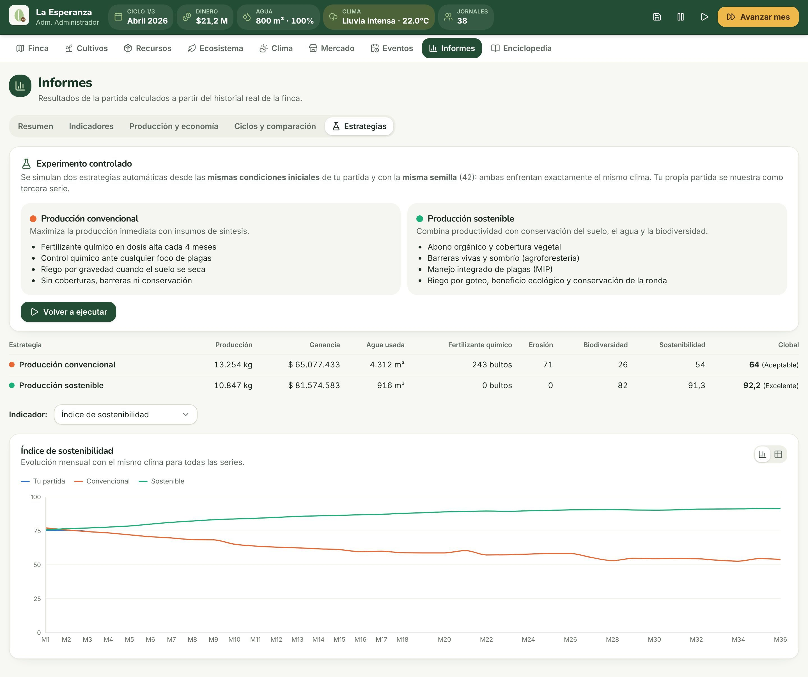
5.4 Errores encontrados y mejoras realizadas
Las pruebas y las simulaciones de calibración revelaron problemas que se corrigieron antes de la entrega:
| Hallazgo | Causa | Corrección |
|---|---|---|
| La finca quebraba en cadena aunque tuviera café listo para cosechar | Sin dinero no se podía pagar la recolección, y sin cosecha no había ingresos | Si falta efectivo, se vende por adelantado la parte de la cosecha necesaria para pagar a los recolectores |
| En la crisis hídrica los cultivos morían siempre | La humedad del suelo caía a cero porque la evaporación no disminuía con el suelo seco | La evapotranspiración se reduce cuando el suelo está seco, como ocurre en la realidad |
| Encharcamiento permanente en temporada de lluvias | El drenaje del exceso de agua era demasiado débil | Drenaje por encima de la capacidad de campo |
| La estrategia sostenible automática quebraba | Invertía todo el capital en el primer mes | Reserva de liquidez y máximo una inversión y dos prácticas nuevas por mes |
| La protección de la quebrada mejoraba sin intervención | La protección inicial se trataba como un programa activo | Solo mejora si el jugador inicia el programa de conservación |
| Rentabilidad siempre en el máximo | Márgenes irreales | Recalibración del precio de referencia, los costos fijos y el costo de recolección |
| Valores del mapa superpuestos con íconos de alerta | Etiquetas en la misma posición | El valor se muestra junto al código del lote |
| Costos de insumos ambiguos («11 bultos») | Faltaba el nombre del insumo | Se agregó el insumo («11 bultos de abono») |
| Indicadores cortados en el teléfono | Los indicadores se encogían | Barra desplazable horizontalmente |
| Eje de precios con etiquetas repetidas | Redondeo a miles | Etiquetas con un decimal |
5.5 Retroalimentación de usuarios
Protocolo
- Participantes: de 5 a 8 personas (compañeros del curso, docentes, familiares o productores rurales).
- Antes de jugar: responder las cinco preguntas de conocimiento del Anexo A (prueba previa).
- Sesión de 20 a 30 minutos con estas tareas: T1 crear una partida en el escenario «Suelo degradado»; T2 usar las capas del mapa para encontrar el lote con mayor erosión; T3 aplicar una práctica de conservación y explicar por qué; T4 avanzar seis meses y responder un evento; T5 cosechar y vender café; T6 ejecutar la comparación de estrategias y explicar la diferencia.
- Observación: registrar si cada tarea se completó sin ayuda, el tiempo aproximado y las dificultades.
- Después de jugar: repetir las preguntas de conocimiento (prueba posterior) y responder el cuestionario de experiencia del Anexo A.
- Análisis: calcular el porcentaje de tareas completadas, el promedio de cada afirmación de experiencia y la mejora entre la prueba previa y la posterior; agrupar los comentarios abiertos por tema.
Indicadores de evaluación
| Indicador | Meta sugerida | Resultado |
|---|---|---|
| Tareas completadas sin ayuda | ≥ 80 % | [completar] |
| Promedio de facilidad de uso (escala 1 a 5) | ≥ 4,0 | [completar] |
| Promedio de utilidad para aprender (escala 1 a 5) | ≥ 4,0 | [completar] |
| Respuestas correctas antes de jugar | — | [completar] |
| Respuestas correctas después de jugar | Mayor que antes | [completar] |
Registro de resultados
| N.º | Perfil del participante | Tareas (de 6) | Prueba previa / posterior (de 5) | Comentarios principales |
|---|---|---|---|---|
| 1 | [completar] | [ ] | [ ] / [ ] | [completar] |
| 2 | [completar] | [ ] | [ ] / [ ] | [completar] |
| 3 | [completar] | [ ] | [ ] / [ ] | [completar] |
| 4 | [completar] | [ ] | [ ] / [ ] | [completar] |
| 5 | [completar] | [ ] | [ ] / [ ] | [completar] |
Mejoras derivadas de la retroalimentación
[Describa aquí los cambios que se hicieron o se proponen a partir de los comentarios de los usuarios. Si no hubo tiempo de implementarlos, descríbalos como trabajo futuro.]
6. Resultados
El resultado principal es un simulador interactivo funcional que permite experimentar con diferentes estrategias de producción y manejo del ecosistema. En relación con los resultados esperados de la actividad:
- Simulador funcional: el usuario puede crear partidas en tres escenarios, tomar decisiones sobre once acciones de parcela y varias acciones de finca, avanzar el tiempo, enfrentar eventos, cosechar, vender, consultar indicadores y terminar con una evaluación final.
- Experimentación con estrategias: la comparación controlada muestra de forma cuantitativa las consecuencias de cada estrategia sobre la producción, la economía, el agua, el suelo y la biodiversidad.
- Comprensión del manejo del ecosistema: cada acción explica su efecto inmediato, ambiental y de largo plazo, y la enciclopedia relaciona ocho conceptos con las mecánicas del juego. La mejora en la comprensión de los usuarios se medirá con el protocolo de la sección 5.5.
- Conciencia ambiental: la puntuación premia la sostenibilidad (40 %) y limita la calificación de quien obtiene rentabilidad degradando el ecosistema.
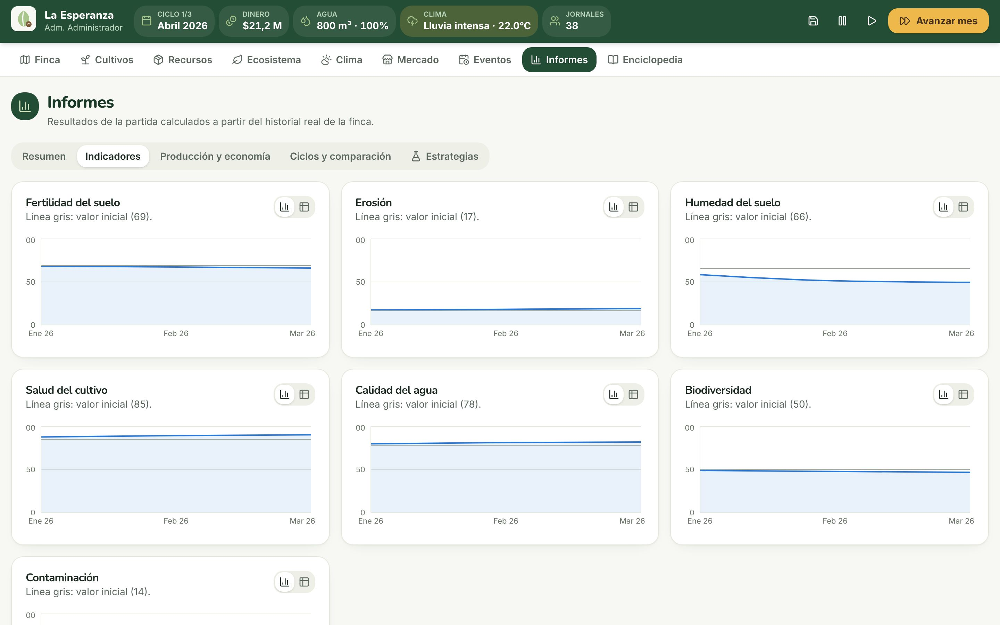
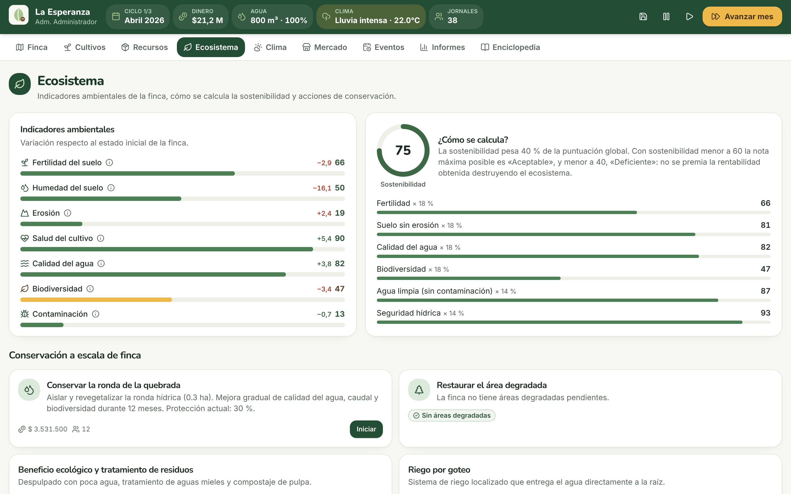
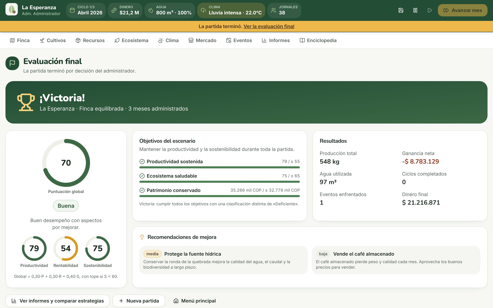
7. Conclusiones
- La degradación del suelo y la contaminación del agua en la caficultura no se deben a una sola causa, sino a la interacción entre la pendiente, la cobertura del suelo, la fertilización, el beneficio del café, el clima y la presión económica. Un simulador dinámico es una herramienta adecuada para enseñar estas interacciones porque muestra efectos que se acumulan en el tiempo.
- La comparación controlada confirma la tesis del proyecto: la producción convencional puede generar más café en el corto plazo, pero degrada el suelo, el agua y la biodiversidad, y obtiene una calificación menor. Las prácticas sostenibles mantienen la productividad, reducen el consumo de agua y, en escenarios de estrés hídrico, incluso producen más.
- Separar el motor de simulación de la interfaz permitió probar las reglas de forma aislada, ejecutar estrategias automáticas y calibrar el modelo con rapidez. Las pruebas de calibración encontraron errores de diseño del modelo que no eran visibles en la interfaz.
- Las prácticas de conservación tienen costos y tardan meses en dar resultados. Representar ese tiempo de establecimiento es importante para que el usuario entienda por qué muchos productores no las adoptan y por qué requieren planificación.
- La ingeniería de sistemas puede aportar al desarrollo regional con herramientas educativas accesibles, que funcionan en un navegador sin costo, para sensibilizar sobre el manejo sostenible de los recursos en el sector rural.
- El modelo es educativo: sus coeficientes son de calibración y deben validarse con datos de campo antes de usarlo para recomendaciones técnicas.
8. Trabajo futuro
- Aplicar el protocolo de retroalimentación con más usuarios, incluidos productores rurales, e incorporar sus sugerencias.
- Calibrar los coeficientes con datos de estaciones climáticas y análisis de suelo de una región específica.
- Agregar otros cultivos de la región (plátano, cacao, aguacate) y la diversificación de ingresos.
- Incluir modo oscuro y un modo multijugador para comparar estrategias entre estudiantes.
- Publicar el simulador en un servicio de alojamiento estático (por ejemplo GitHub Pages) para facilitar el acceso.
9. Acceso al simulador y evidencias
| Elemento | Ubicación |
|---|---|
| Repositorio de código | https://github.com/dylanarizaaa/EcoFinca (rama claude/ecofinca-agricultural-simulator-ckhdng) |
| Simulador en línea | [URL pública del simulador, si se publica] |
| Documentación técnica | README.md y carpeta docs/ del repositorio |
| Informe | documentos/Informe-Final-EcoFinca.docx |
| Capturas de pantalla | documentos/capturas/ |
Ejecución local
npm install # instala dependencias (requiere Node.js 20 o superior) npm run dev # abre el simulador en http://localhost:5173 npm test # ejecuta las 122 pruebas npm run build # compila la versión de producción en dist/
Referencias
- Allen, R. G., Pereira, L. S., Raes, D., & Smith, M. (1998). Crop evapotranspiration: Guidelines for computing crop water requirements (FAO Irrigation and Drainage Paper No. 56). FAO.
- Altieri, M. A. (1999). The ecological role of biodiversity in agroecosystems. Agriculture, Ecosystems & Environment, 74(1–3), 19–31.
- Centro Nacional de Investigaciones de Café [Cenicafé]. (s. f.). Publicaciones: Avances Técnicos y Boletines Técnicos. https://www.cenicafe.org/
- FAO & ITPS. (2015). Status of the World’s Soil Resources: Main report. Food and Agriculture Organization of the United Nations.
- Federación Nacional de Cafeteros de Colombia. (s. f.). Estadísticas cafeteras. https://federaciondecafeteros.org/
- Instituto de Hidrología, Meteorología y Estudios Ambientales [IDEAM]. (s. f.). Fenómenos El Niño y La Niña. http://www.ideam.gov.co/
- Kogan, M. (1998). Integrated pest management: Historical perspectives and contemporary developments. Annual Review of Entomology, 43, 243–270.
- Ministerio de Ambiente y Desarrollo Sostenible. (2015). Decreto 1076 de 2015, por medio del cual se expide el Decreto Único Reglamentario del Sector Ambiente y Desarrollo Sostenible.
- Moguel, P., & Toledo, V. M. (1999). Biodiversity conservation in traditional coffee systems of Mexico. Conservation Biology, 13(1), 11–21.
- Perfecto, I., Rice, R. A., Greenberg, R., & van der Voort, M. E. (1996). Shade coffee: A disappearing refuge for biodiversity. BioScience, 46(8), 598–608.
- Sterman, J. D. (2000). Business dynamics: Systems thinking and modeling for a complex world. Irwin/McGraw-Hill.
- Wischmeier, W. H., & Smith, D. D. (1978). Predicting rainfall erosion losses: A guide to conservation planning (Agriculture Handbook No. 537). U.S. Department of Agriculture.
Anexo A. Cuestionario de retroalimentación
Parte 1. Preguntas de conocimiento (antes y después de jugar)
- ¿Qué práctica reduce más la erosión en una ladera cafetera? a) Aplicar más fertilizante químico. b) Mantener cobertura vegetal y barreras vivas. c) Regar por gravedad.
- ¿Qué ocurre con el fertilizante químico aplicado en exceso? a) Aumenta la cosecha sin límite. b) Una parte se lava hacia las fuentes de agua y las contamina. c) Se convierte en materia orgánica.
- ¿Qué son las aguas mieles? a) Agua de lluvia almacenada. b) Aguas residuales del despulpado y lavado del café. c) Un tipo de fertilizante.
- ¿Por qué la biodiversidad ayuda a la producción? a) Porque los enemigos naturales controlan las plagas. b) Porque aumenta el precio del café. c) No tiene relación con la producción.
- ¿Qué ventaja tiene el riego por goteo frente al riego por gravedad? a) Usa menos agua para lograr la misma humedad. b) Aumenta la erosión. c) No necesita reservorio.
Respuestas correctas: 1b, 2b, 3b, 4a, 5a.
Parte 2. Experiencia de uso (escala de 1 = totalmente en desacuerdo a 5 = totalmente de acuerdo)
| Afirmación | 1 | 2 | 3 | 4 | 5 |
|---|---|---|---|---|---|
| Fue fácil entender cómo crear una partida y empezar a jugar. | |||||
| El mapa y sus capas me ayudaron a identificar problemas de la finca. | |||||
| Entendí qué efecto tenía cada acción antes de ejecutarla. | |||||
| El resumen del mes me permitió entender qué cambió y por qué. | |||||
| La comparación de estrategias me ayudó a entender la diferencia entre producción convencional y sostenible. | |||||
| El simulador me enseñó algo nuevo sobre el manejo del suelo y el agua. | |||||
| El diseño visual es claro y agradable. | |||||
| Recomendaría el simulador para enseñar este tema. |
Parte 3. Preguntas abiertas
- ¿Qué fue lo más útil o interesante del simulador?
- ¿Qué fue lo más confuso o difícil de usar?
- ¿Qué decisión tomaste que tuvo un efecto que no esperabas?
- ¿Qué agregarías o cambiarías?
Anexo B. Galería de pantallas
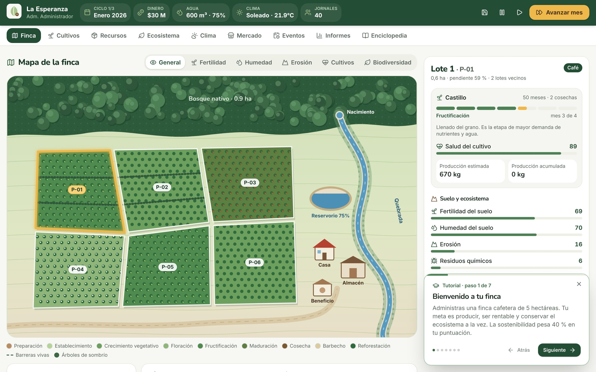
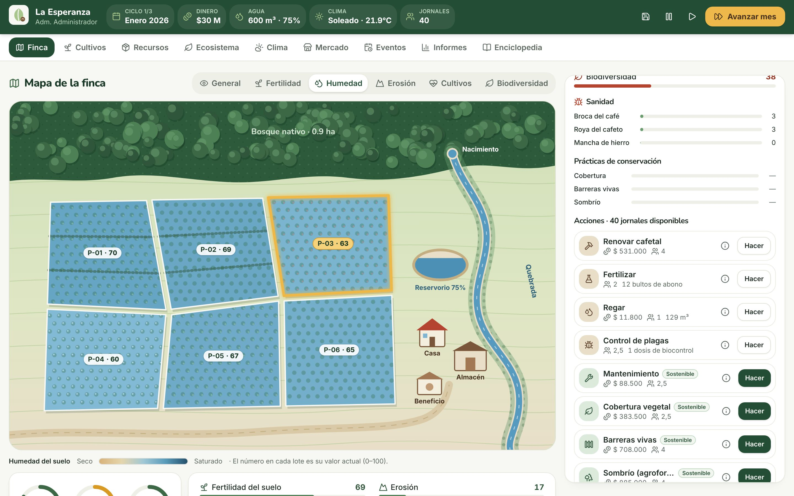
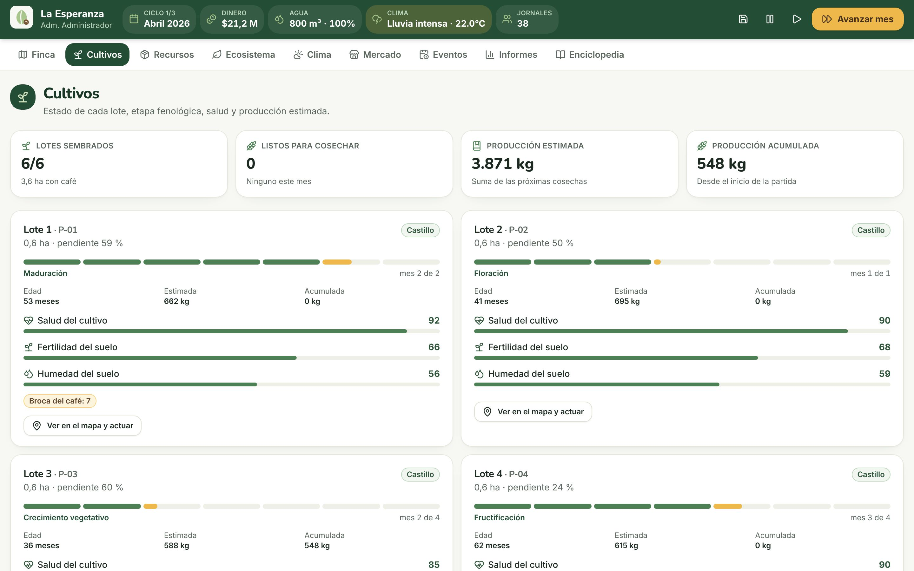
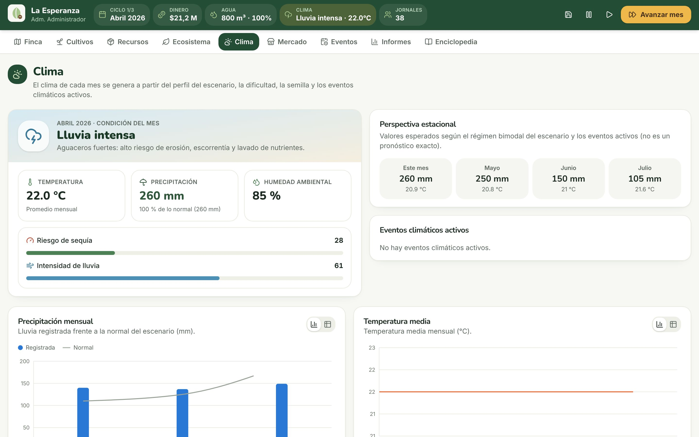
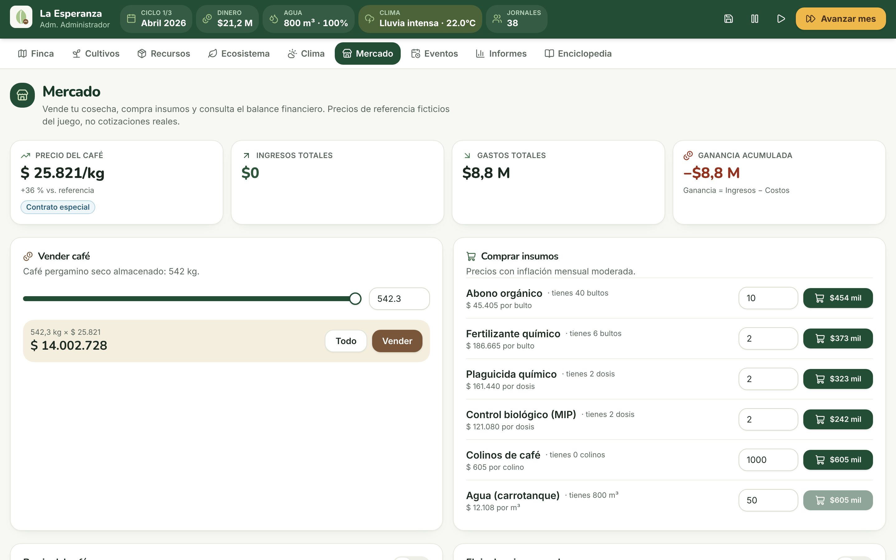
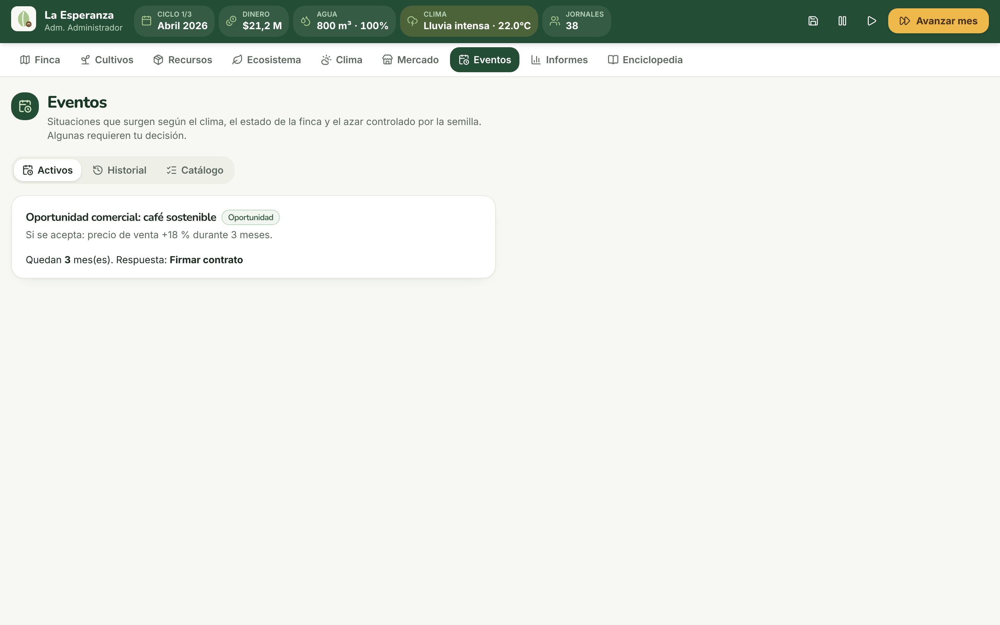
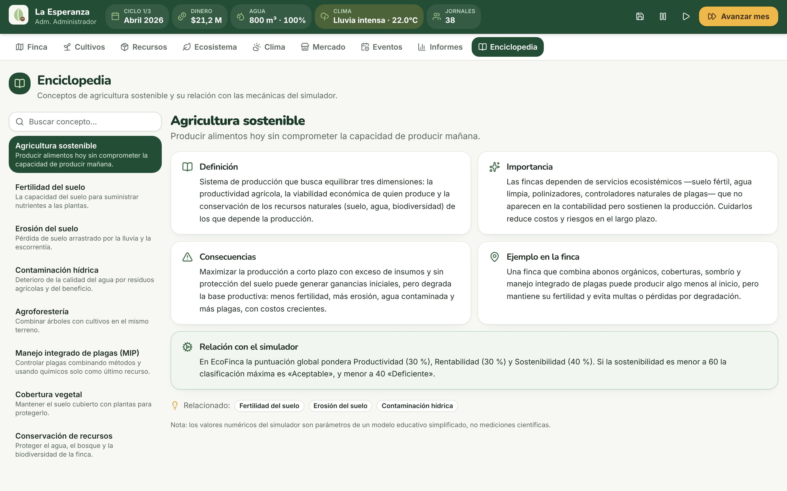